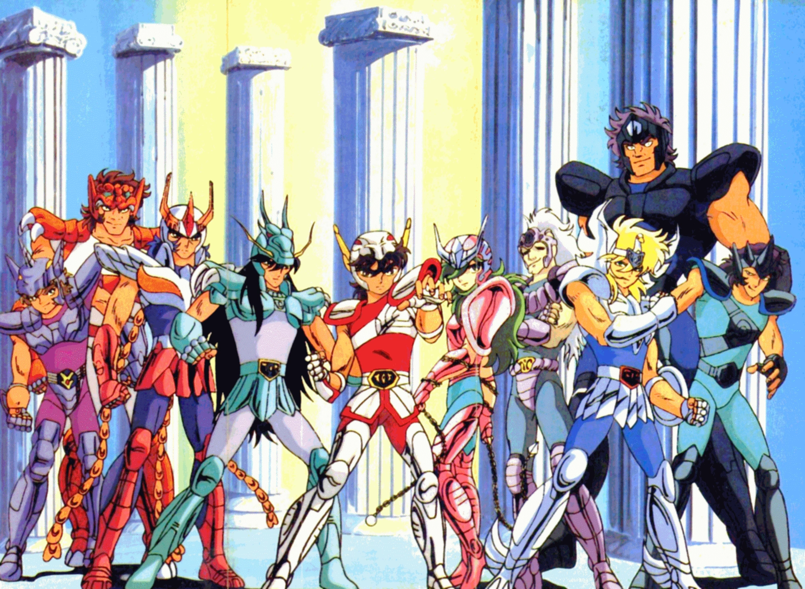
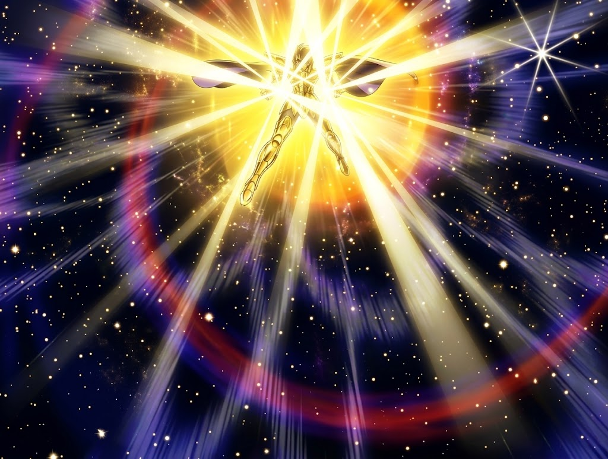
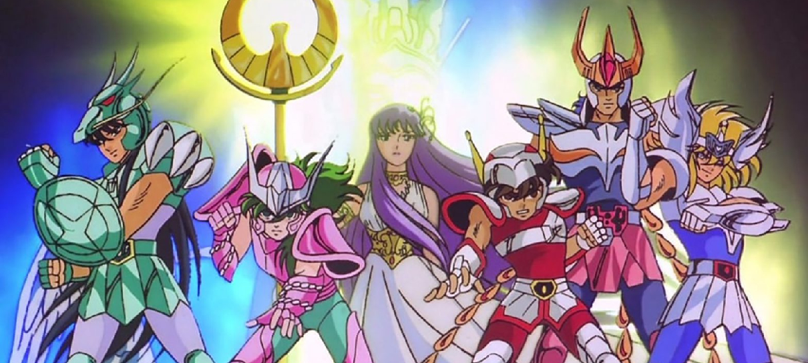

Os Cavaleiros do Zodíaco (conhecido no Japão como Saint Seiya) é uma das franquias de animação e quadrinhos mais influentes do mundo. Criada por Masami Kurumada, a obra mistura mitologia grega, astronomia, artes marciais e valores como amizade, superação e justiça.

A história acompanha um grupo de cinco jovens órfãos — Seiya, Shiryu, Hyoga, Shun e Ikki — enviados para diferentes partes do globo com a missão de passar por treinamentos extremos para conquistar Armaduras sagradas. Eles se tornam os Cavaleiros de Atena, guerreiros lendários destinados a proteger a deusa da sabedoria e a humanidade contra a ameaça de deuses como Áres, Poseidon e Hades.
| Criador e Autor: | Masami Kurumada |
| Direção Notável: | Kozo Morishita e Shigeyasu Yamauchi |
| Design de Personagens: | Shingo Araki e Michi Himeno |
| Trilha Sonora: | Seiji Yokoyama |
| Estúdio de Animação: | Toei Animation |
| Transmissão Original: | 11 de Outubro de 1986 – 1 de Abril de 1989 (Série TV) |
| Total de Episódios Clássicos: | 114 episódios + 31 OVAs (Saga de Hades) |

A energia utilizada pelos personagens é chamada de Cosmos (ou Cosmocristal). Trata-se da força espiritual e física concentrada no centro do corpo de cada ser humano. Os Cavaleiros aprendem a "explodir" o seu Cosmos, permitindo rasgar o céu com os punhos e abrir fendas na terra. No nível supremo, o Cosmos atinge a velocidade da luz e desperta o lendário Sétimo e Oitavo Sentido.
A ordem do Santuário é dividida em três patentes principais de acordo com o metal das Armaduras e o poder do Cosmos:
| Patente | Quantidade | Velocidade do Golpe | Descrição |
|---|---|---|---|
| Cavaleiros de Bronze | 48 guerreiros | Até Mach 1 (Velocidade do som) | A patente base. É a categoria dos protagonistas da história. |
| Cavaleiros de Prata | 24 guerreiros | Mach 2 a Mach 5 | Mestres e especialistas do Santuário enviados para missões de elite. |
| Cavaleiros de Ouro | 12 guerreiros | 300.000 km/s (Velocidade da luz) | A elite suprema que protege as 12 Casas do Zodíaco. |

Lançado no Brasil em setembro de 1994 pela extinta Rede Manchete, Os Cavaleiros do Zodíaco desencadeou a primeira grande "febre de animes" no país. O sucesso abriu portas para diversos outros títulos japoneses, além de gerar uma marcante linha de brinquedos (Bonecos Cloth Myth) e álbuns de figurinhas.

© Todos os direitos reservados - Miguel Oliveira